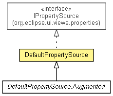

org.eclipse.net4j.util.ui
Class DefaultPropertySource<RECEIVER>
java.lang.Object
 org.eclipse.net4j.util.ui.DefaultPropertySource<RECEIVER>
org.eclipse.net4j.util.ui.DefaultPropertySource<RECEIVER>
- All Implemented Interfaces:
- org.eclipse.ui.views.properties.IPropertySource
- public class DefaultPropertySource<RECEIVER>
- extends Object
- implements org.eclipse.ui.views.properties.IPropertySource

- Since:
- 3.2
| Methods inherited from class java.lang.Object |
clone, equals, finalize, getClass, hashCode, notify, notifyAll, toString, wait, wait, wait |
DefaultPropertySource
public DefaultPropertySource(RECEIVER receiver)
DefaultPropertySource
public DefaultPropertySource(RECEIVER object,
IPropertyProvider<RECEIVER> provider)
getReceiver
public RECEIVER getReceiver()
addDescriptor
public org.eclipse.ui.views.properties.PropertyDescriptor addDescriptor(String category,
Object id,
String displayName,
String description)
addDescriptors
public void addDescriptors(IPropertyProvider<RECEIVER> provider)
getPropertyDescriptors
public org.eclipse.ui.views.properties.IPropertyDescriptor[] getPropertyDescriptors()
- Specified by:
getPropertyDescriptors in interface org.eclipse.ui.views.properties.IPropertySource
getPropertyDescriptor
public org.eclipse.ui.views.properties.IPropertyDescriptor getPropertyDescriptor(Object id)
getProperty
public Property<RECEIVER> getProperty(Object id)
getPropertyValue
public Object getPropertyValue(Object id)
- Specified by:
getPropertyValue in interface org.eclipse.ui.views.properties.IPropertySource
isPropertySet
public boolean isPropertySet(Object id)
- Specified by:
isPropertySet in interface org.eclipse.ui.views.properties.IPropertySource
resetPropertyValue
public void resetPropertyValue(Object id)
- Specified by:
resetPropertyValue in interface org.eclipse.ui.views.properties.IPropertySource
setPropertyValue
public void setPropertyValue(Object id,
Object value)
- Specified by:
setPropertyValue in interface org.eclipse.ui.views.properties.IPropertySource
getEditableValue
public Object getEditableValue()
- Specified by:
getEditableValue in interface org.eclipse.ui.views.properties.IPropertySource
Copyright (c) 2004 - 2011 Eike Stepper (Berlin, Germany) and others.